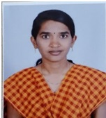

Dr.K.LAVANYA
Lecturer
Department of Telugu
MJPTBCW RESIDENTIAL DEGREE COLLEGE FOR WOMEN
Teaching
She got UGC-JRF and NET in 2017. She Qualified TS-SET in 2017. She has Completed Ph.D from University of Hyderabad in 2019.
She has 3 years of Research Experience. She Published 3 research papers.
She has Two years of Experience in Teaching. She has attended various National Seminars.